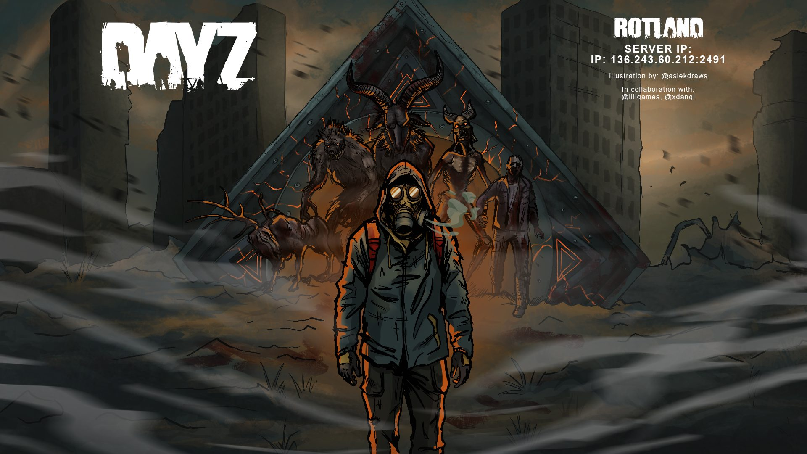

MAPA
MAP
Chernarus+

Czarnoruś skażona nie tylko infekcją. PvP i PvE w jednym świecie, demoniczne modyfikacje i lokacje budowane od zera przez naszą ekipę.
Chernarus corrupted by more than infection. PvP and PvE in one world, demonic mods and locations built from scratch by our team.
Rotland łączy taktyczne starcia graczy z demonicznym zagrożeniem czyhającym w terenie. Do tego autorskie lokacje, których nie znajdziesz na żadnym innym serwerze.
Rotland combines tactical player combat with demonic threats lurking across the map, plus original locations you won't find on any other server.
Rywalizuj z innymi survivorami i jednocześnie mierz się z demonicznymi istotami rozsianymi po mapie.
Fight other survivors while facing demonic creatures scattered across the map.
Autorskie moduły wprowadzają istoty, rytuały i zagrożenia, których nie znajdziesz w podstawowej wersji DayZ.
Custom modules add creatures, rituals and threats you won't find in vanilla DayZ.
Ruiny, kryjówki i areny budowane ręcznie przez naszą ekipę — każda z własną historią i lootem.
Ruins, hideouts and arenas hand-built by our team — each with its own story and loot.
Stały nadzór, anti-cheat i szybka reakcja na zgłoszenia — dbamy o uczciwą rozgrywkę.
Constant monitoring, anti-cheat and fast reports handling — we keep the game fair.
Ocalali mówią o bramach otwierających się w ruinach miast i sylwetkach, które nie są zwykłymi zainfekowanymi. Czarnoruś, którą znałeś, nie istnieje — zamiast niej Rotland: świat, w którym granica między człowiekiem, zombie i czymś znacznie starszym się zaciera.
Survivors speak of gates opening in city ruins, and shapes that are not ordinary infected. The Chernarus you knew is gone — in its place, Rotland: a world where the line between human, infected and something far older has blurred.
To miejsce dla graczy, którzy chcą czegoś więcej niż kolejny reset serwera vanilla.
This is a place for players who want more than another vanilla server wipe.
Pobierz wymagane modyfikacje przez Steam Workshop — pełna lista na stronie „Jak dołączyć”.
Download the required mods via Steam Workshop — full list on the "How to join" page.
Wyszukaj „Rotland” w przeglądarce serwerów lub połącz się bezpośrednio po adresie IP.
Search for "Rotland" in the server browser or connect directly using the IP address.
Zapoznaj się z regulaminem, dołącz do Discorda i zacznij przetrwanie w Rotland.
Read the rules, join our Discord and start surviving in Rotland.